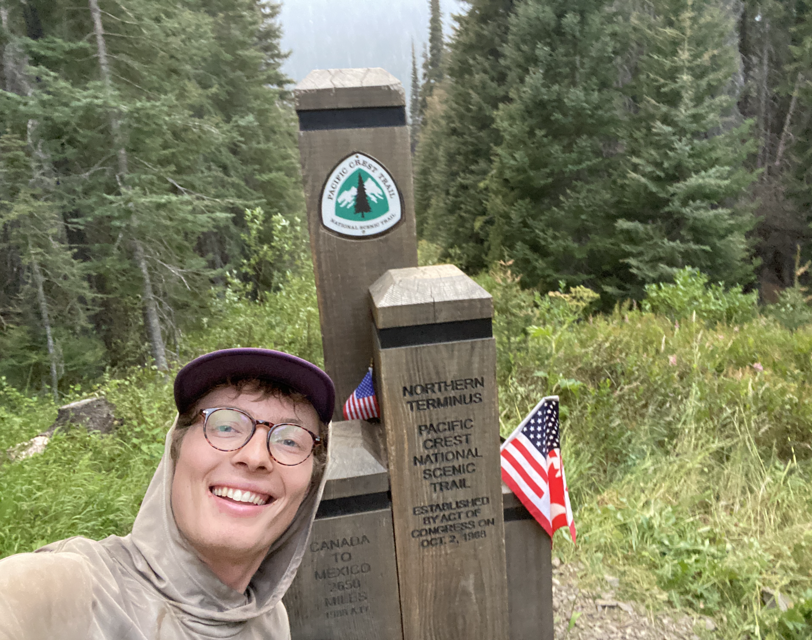
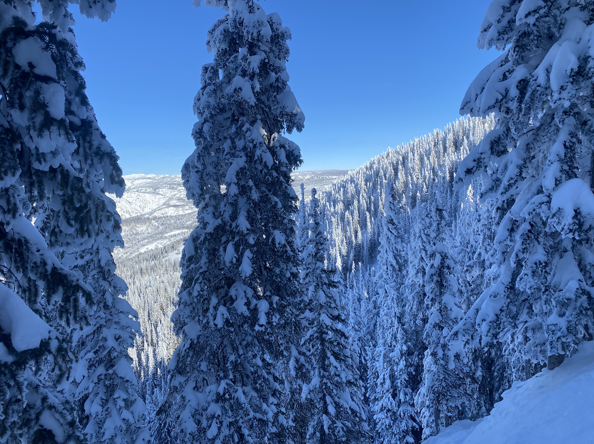

Matthew Goodbred
Ph.D. Student, Department of Astrophysical Sciences Princeton University
- Email mgoodbred@princeton.edu
- Office 4 Ivy Lane, Princeton, NJ 08544, Office 24A
- CV Curriculum vitae
About
I am a Ph.D. student in the Department of Astrophysical Sciences at Princeton University, where I work with Anatoly Spitkovsky on the plasma physics of compact objects. My work is largely computational, leveraging large particle-in-cell simulations to study the behavior of relativistic plasmas on microphysical and global scales.
I am currently interested in the structure of pulsar magnetospheres, a difficult problem given the limited spatial range accessible to particle-in-cell simulations. By combining these kinetic simnulations with toy models and analytic theory, I hope to better understand where and how plasma populates the magnetosphere, with possible implications for variability in the observed radio emission. I am also interested in the origin of high-energy emission from neutron stars, such as gamma-ray flares and fast radio bursts. In particular, I would like to understand the role of magnetic reconnection and its dynamics in these extreme environments.
You can read more on the research and publications pages.
My Other Interests
When not working on research, I can almost always be found outside. I love to ski in the winter and take on long-distance backpacking trips in the summer. It's when I have some of my best ideas!

